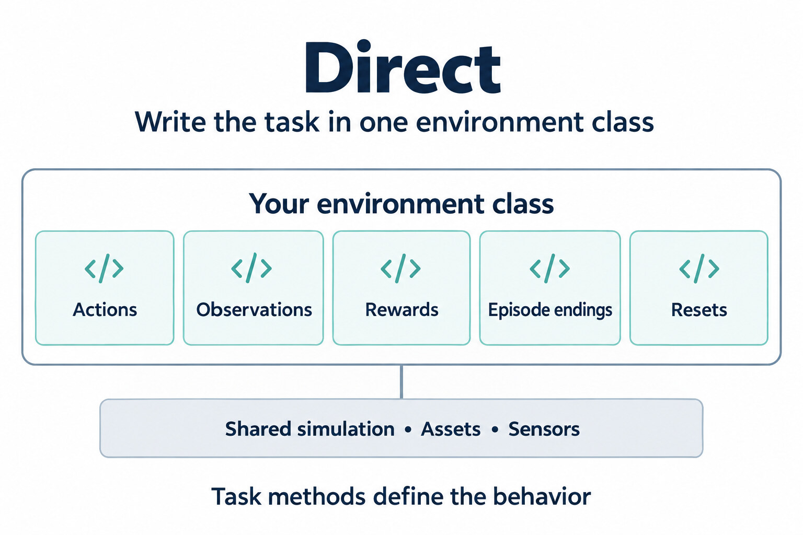
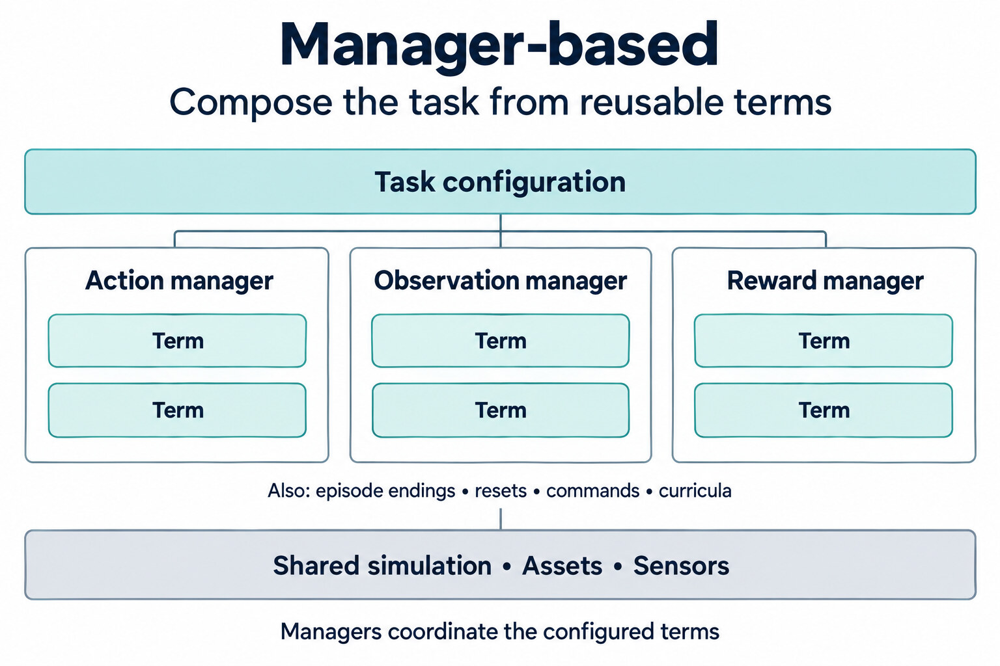

直接式与管理器式 MDP#
强化学习任务定义一个马尔可夫决策过程（MDP）：智能体可以采取的动作、接收的观测、获得的奖励，以及回合结束条件。在 Isaac Lab 中，既可直接在环境类中编写这些逻辑，也可通过管理器协调各个项来组装任务。
两种方式都使用 Isaac Lab 的仿真、场景、资产和传感器。区别在于如何组织任务代码，不决定物理后端的选择。
如何选择#
直接 |
基于管理器 |
|
|---|---|---|
任务逻辑 |
在环境类中实现方法。 |
配置可复用的项，由管理器执行。 |
修改任务 |
编辑实现任务行为的方法及辅助函数。 |
在配置中添加、替换或调整各个项。 |
适用场景 |
逻辑耦合紧密、需要自定义优化或多智能体的任务。 |
多个任务共用观测、奖励、动作或重置行为。 |
对于新的单智能体任务，基于管理器的环境是一个合适的起点：可以复用已有项，并按需添加自定义项。如果希望将任务逻辑集中编写，或需要更细致地控制实现，可选择直接工作流。性能取决于任务的具体计算工作，因此不要只凭速度判断工作流，应先做性能分析。
直接工作流环境#
继承 envs.DirectRLEnv，并实现定义任务的方法。基类负责仿真循环，在每一步的相应位置调用这些方法。

_pre_physics_step()处理输入动作，_apply_action()施加动作。_get_observations()和_get_rewards()分别返回观测与奖励。_get_dones()报告终止与超时，_reset_idx()重置选定环境。
使用 envs.DirectRLEnvCfg 配置环境。多智能体任务使用 envs.DirectMARLEnv 和 envs.DirectMARLEnvCfg。
这些方法可以调用共享的辅助函数，或经过优化的 PyTorch、Warp 代码。将任务放在同一个类中，并不意味着所有计算都要内联编写。从 IsaacGymEnvs 或 OmniIsaacGymEnvs 迁移任务时，这种结构也较为熟悉。
Cartpole 奖励：直接工作流
Cartpole 在 _get_rewards() 中计算奖励。
def _get_rewards(self) -> torch.Tensor:
return compute_rewards(
self.cfg.rew_scale_alive,
self.cfg.rew_scale_terminated,
self.cfg.rew_scale_pole_pos,
self.cfg.rew_scale_cart_vel,
self.cfg.rew_scale_pole_vel,
self.joint_pos[:, self._pole_dof_idx],
self.joint_vel[:, self._pole_dof_idx],
self.joint_vel[:, self._cart_dof_idx],
self.reset_terminated,
self.step_dt,
)
具体计算位于独立的 compute_rewards() 函数中，由 TorchScript 编译。
@torch.jit.script
def compute_rewards(
rew_scale_alive: float,
rew_scale_terminated: float,
rew_scale_pole_pos: float,
rew_scale_cart_vel: float,
rew_scale_pole_vel: float,
pole_pos: torch.Tensor,
pole_vel: torch.Tensor,
cart_vel: torch.Tensor,
reset_terminated: torch.Tensor,
step_dt: float,
) -> torch.Tensor:
pole_pos = wrap_to_pi(pole_pos)
rew_alive = rew_scale_alive * (1.0 - reset_terminated.float())
rew_termination = rew_scale_terminated * reset_terminated.float()
rew_pole_pos = rew_scale_pole_pos * torch.sum(torch.square(pole_pos), dim=-1)
rew_cart_vel = rew_scale_cart_vel * torch.sum(torch.abs(cart_vel), dim=-1)
rew_pole_vel = rew_scale_pole_vel * torch.sum(torch.abs(pole_vel), dim=-1)
total_reward = (rew_alive + rew_termination + rew_pole_pos + rew_cart_vel + rew_pole_vel) * step_dt
return total_reward
基于管理器的环境#
使用 envs.ManagerBasedRLEnv 和 envs.ManagerBasedRLEnvCfg，可通过配置项组装任务。每个项定义一部分行为，例如某个观测或奖励；其配置选择具体实现并提供参数，对应的管理器负责协调执行和汇总结果。

例如，奖励管理器计算各奖励项并汇总其加权贡献，观测管理器将各观测项收集成组。其他管理器负责动作、终止条件、重置等事件、命令以及课程。
需要修改任务的某一部分时，只需替换相应项或调整参数。同一个项可供多个任务复用，自定义项也可包含任务所需的任意计算。
Cartpole 奖励：基于管理器的工作流
Cartpole 在 RewardsCfg 中组合奖励项。每个项指定函数、权重及函数所需参数。
@configclass
class RewardsCfg:
"""Reward terms for the MDP."""
# (1) Constant running reward
alive = RewTerm(func=mdp.is_alive, weight=1.0)
# (2) Failure penalty
terminating = RewTerm(func=mdp.is_terminated, weight=-2.0)
# (3) Primary task: keep pole upright
pole_pos = RewTerm(
func=mdp.joint_pos_target_l2,
weight=-1.0,
params={"asset_cfg": SceneEntityCfg("robot", joint_names=["cart_to_pole"]), "target": 0.0},
)
# (4) Shaping tasks: lower cart velocity
cart_vel = RewTerm(
func=mdp.joint_vel_l1,
weight=-0.01,
params={"asset_cfg": SceneEntityCfg("robot", joint_names=["slider_to_cart"])},
)
# (5) Shaping tasks: lower pole angular velocity
pole_vel = RewTerm(
func=mdp.joint_vel_l1,
weight=-0.005,
params={"asset_cfg": SceneEntityCfg("robot", joint_names=["cart_to_pole"])},
)
# (6) Success rate tracking (zero-weight, metric only)
success_rate = RewTerm(func=mdp.survival_success_rate, weight=0.0)
对于不需要强化学习奖励和终止条件的环境，使用 envs.ManagerBasedEnv 与 envs.ManagerBasedEnvCfg。
进一步阅读#
SO-101 小瓶放置教程 展示了一个完整的管理器式操作任务，包括场景、MDP 项、重置课程和智能体配置。
将任务接入训练库，参阅 强化学习。